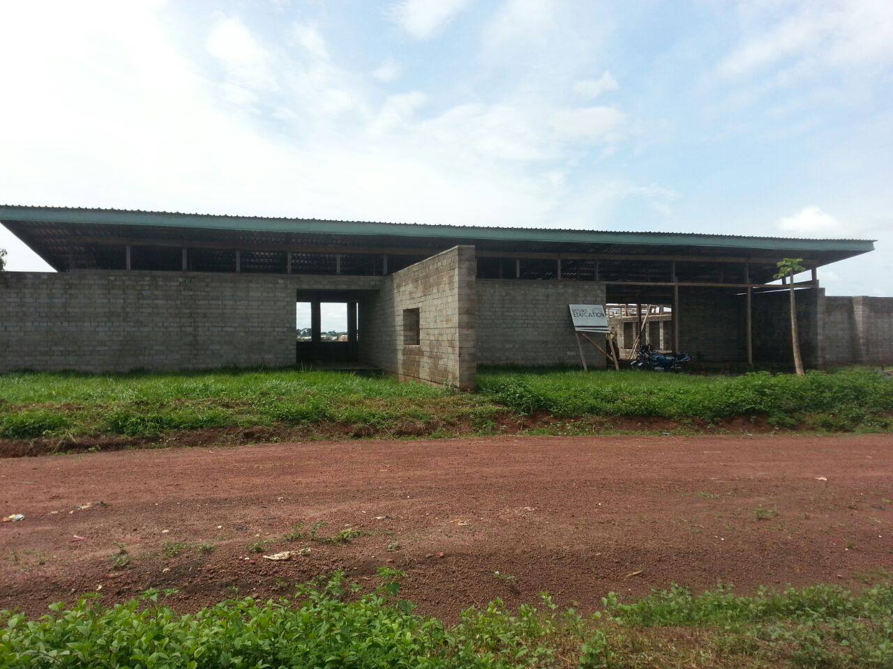
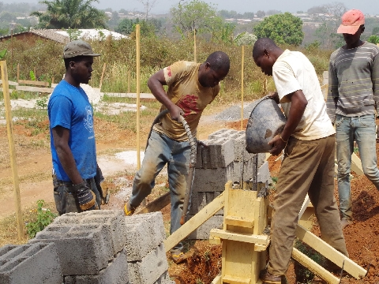

In Kamerun - Rising Education - Das Grundschulbauprojekt


"Tell me and I'll forget; show me and I
may remember; involve me and I'll understand."
chinesisches Sprichwort
Bildung hat
sich als das effektivste Werkzeug und Instrument in Entwicklungsprogrammen, zur
Verringerung von Sterblichkeitsraten, Zunahme des Gesundheitsbewusstseins und
dazu Menschen zu befähigen, Verantwortung für ihr die eigenen
Handlungsmöglichkeiten übernehmen, erwiesen. Bildung hat es zudem
Millionen von Menschen aus verschiedenen Gemeinschaften ermöglicht, sich die
Dinge, die um sie herum geschehen, bewusst zu machen und sich am
gesellschaftlichen Leben aktiv zu beteiligen.
In dieser Hinsicht arbeitet
die Hope Foundation in Zusammenarbeit mit 15 Architekturstudent*innen der Technischen Universität (TU) Berlin daran eine Vor- und Grundschule in Bertoua, der Hauptstadt der östlichen Region Kameruns (Est), zu errichten. Die Bauarbeiten begannen im Januar 2014.

Auf diesem Weg
realisiert die Hope Foundation eines der MDGs (Millennium Development
Goals) nach dem Grundprinzip die Grundschulbildung für jeden Menschen in
der Welt bereitzustellen, und jedem Kind den Zugang zur Schulbildung zu
ermöglichen. Diese Schule in Bertoua hat eine doppelte Zielsetzung: die
Schule wird primär als bilinguale Vorschule für 50 Kinder im Alter von 3
bis 6 Jahren und als Grundschule dienen, wo bis zu 500 Kinder eine
schulische Grundbildung für sechs Jahre erhalten. Darüber hinaus wird sie
am Nachmittag als Schulungs- und Fortbildungszentrum genutzt, wo Seminare und
weiterführende Workshops für Jugendliche und Erwachsene
angeboten werden.
Der Ablauf des Projekts gestaltet sich wie folgt: im Jahr
2013 begannen die Vorbereitungen für das "Rising Education"-Projekt mit dem
Design des Gebäudekomplexes durch Studierende der TU Berlin und gleichzeitig
führte die Hope Foundation die Akquise von Fördermitteln und den Kontakt zu
weiteren Projektpartnern durch.
Die erste Bauphase verlief von Januar bis März 2014. Hierbei wurde das Grundstück vorbereitet und begradigt,
zudem wurden die Fundamentarbeiten, die Steinproduktion und Maurerarbeiten als Vorbereitung für den
Administrationsbereich und Mehrzweckbereich (A/M) eingeleitet.
In der sich
anschließenden zweiten Bauphase von Februar 2015 bis Juli 2015 wurde das Dachgebälk vom Administrationsbereich und dem Mehrzweckbereich gebaut. Parallel dazu ging
die Steinproduktion und die Fundamentarbeiten für den 1. und 2. Klassenraum (K1/2) weiter.
Gleichzeitig wurde der erste Entwurf an den Mehrbedarf der Schule angepasst und
dementsprechend verändert. Dieses erfolgt durch einen kamerunischen Architekten.
In der dritten Bauphase (Dez. 2015 - Mai 2016) wurde die Steinproduktion weitergeführt und mit den Fundamentarbeiten des L-Blockes (LB) begonnen. Durch die Tiefe und Größe des
Fundamentes des zweistöckigen L-Blockes dauerte dieser Arbeitsschritt mehrere Monate. Das Dächer des Administrationsbereiches und des Mehrzweckbereiches sowie der Klassenräume 1/2 wurden gedeckt.
In den nächsten Bauphasen wird der Gebäudekomplex Schritt für
Schritt fertiggestellt und die Bauarbeiten beendet werden. Es sollen die letzten Schritte vor der Bereitstellung der Schule erfolgen, so
z.B. Elektrizitätsversorgung, Sanitäranlagen u.v.m. Zudem werden zu dem
Zeitpunkt das Personal der Schule und die Schüler*innen ausgewählt, basierend
auf den Sitzungen und Arbeiten des "Parents Teachers Association" (PTA).
Die Idee
hinter diesem Projekt stammt aus der Feststellung, dass Bertoua eine der ärmsten Regionen in Kamerun ist und ein großer Bedarf an Schulen,
Ausbildungseinrichtungen und besseren Lernstandards besteht, um eine
bessere Entwicklung zu erreichen.
In den ersten zwei Bauphasen konnten sich die 15 Architekturstudent*innen mit der lokalen Bevölkerung und kamerunischen Architekturstudent*innen austauschen. Durch das Projekt können alle
Beteiligten sowohl ihr Wissen als auch ihre Fähigkeiten und
Fertigkeiten austauschen und miteinander teilen, um der Gemeinschaft
zu helfen und um die Entwicklung in der Region Bertoua zu
unterstützen.
Partner:
15 Architekturstudent*innen (
Rising Architecture),
dieBaupiloten, ANEAC-NAASC, Deutsche
Botschaft Yaounde, die Regierung Kameruns,
Lycée Technique de Kpokolota, Dienststelle des Bürgermeisters von Bertoua, Presbyterianische Kirche
Kamerun, The
Cameroonian Ministry of Basic Education, The
Council of Bertoua, Ministry
of Professional Training and Employment
Förderung:
Das Projekt wurde vom Centrum für internationale Migration und Entwicklung (CIM) im Auftrag der deutschen Bundesregierung sowienvon der Futura Stiftung bezuschusst.
Projekte dieser Art sind immer auf Unterstützung in Form von Zeit- oder Geldspenden angewiesen. Mit solchen Hilfen konnten wir bereits erste Erfolge verzeichnen.
Die weiteren Schritte bis zur Fertigstellung des Bildungszentrums können mit Ihrer Hilfe gelingen! Jede Form und Größe von Spenden trägt zum Projekt bei und wird dankbar entgegengenommen.